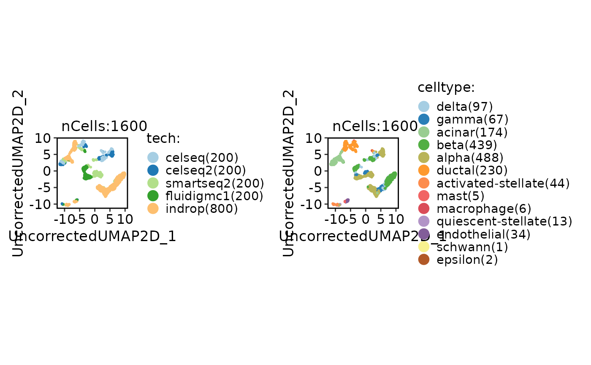
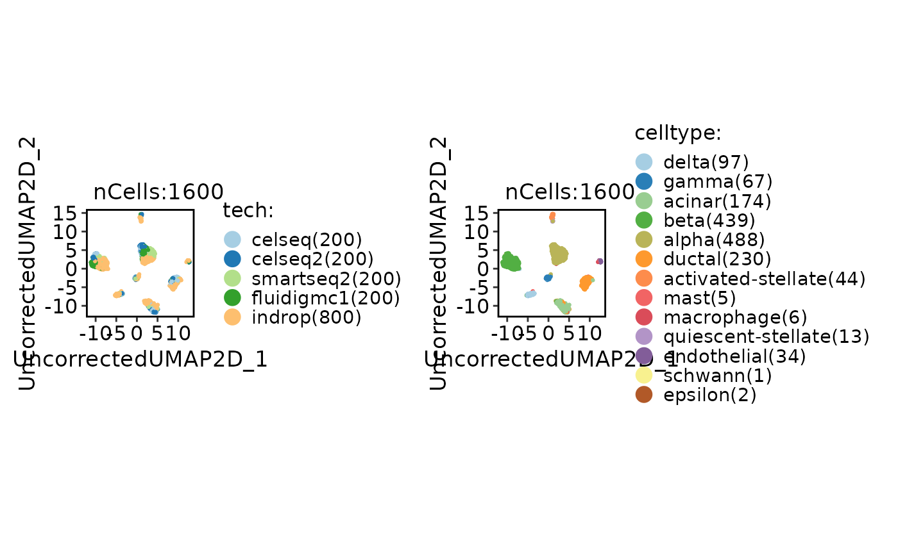
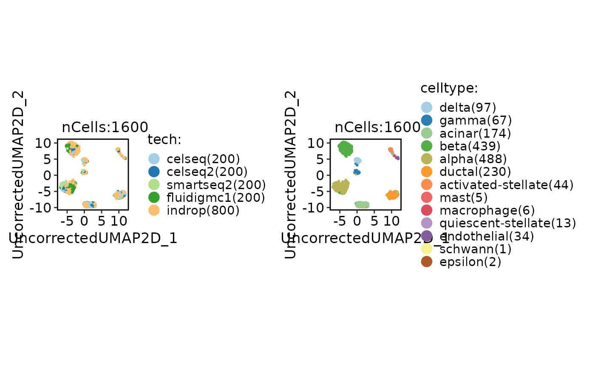
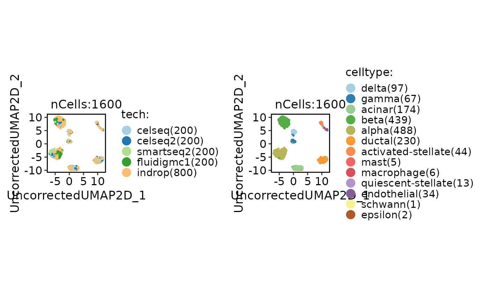

Integrate single-cell RNA-seq data using various integration methods.
Usage
integration_scop(
srt_merge = NULL,
batch,
append = TRUE,
srt_list = NULL,
assay = NULL,
integration_method = "Uncorrected",
do_normalization = NULL,
normalization_method = "LogNormalize",
do_HVF_finding = TRUE,
HVF_source = "separate",
HVF_method = "vst",
nHVF = 2000,
HVF_min_intersection = 1,
HVF = NULL,
do_scaling = TRUE,
vars_to_regress = NULL,
regression_model = "linear",
scale_within_batch = FALSE,
linear_reduction = "pca",
linear_reduction_dims = 50,
linear_reduction_dims_use = NULL,
linear_reduction_params = list(),
force_linear_reduction = FALSE,
nonlinear_reduction = "umap",
nonlinear_reduction_dims = c(2, 3),
nonlinear_reduction_params = list(),
force_nonlinear_reduction = TRUE,
neighbor_metric = "euclidean",
neighbor_k = 20L,
cluster_algorithm = "louvain",
cluster_resolution = 0.6,
seed = 11,
verbose = TRUE,
...
)Arguments
- srt_merge
A merged `Seurat` object that includes the batch information.
- batch
A character string specifying the batch variable name.
- append
The integrated data will be appended to the original Seurat object (srt_merge). Default is
TRUE.- srt_list
A list of
Seuratobjects to be checked and preprocessed.- assay
The name of the assay to be used for downstream analysis.
- integration_method
A character string specifying the integration method to use. Supported methods are:
"Uncorrected","Seurat","scVI","MNN","fastMNN","Harmony","Scanorama","BBKNN","CSS","LIGER","Conos","ComBat". Default is"Uncorrected".- do_normalization
Whether data normalization should be performed. Default is
TRUE.- normalization_method
The normalization method to be used. Possible values are
"LogNormalize","SCT", and"TFIDF". Default is"LogNormalize".- do_HVF_finding
Whether highly variable feature (HVF) finding should be performed. Default is
TRUE.- HVF_source
The source of highly variable features. Possible values are
"global"and"separate". Default is"separate".- HVF_method
The method for selecting highly variable features. Default is
"vst".- nHVF
The number of highly variable features to select. Default is
2000.- HVF_min_intersection
The feature needs to be present in batches for a minimum number of times in order to be considered as highly variable. The default value is
1.- HVF
A vector of highly variable features. Default is
NULL.- do_scaling
Whether to perform scaling. If
TRUE, the function will force to scale the data using the Seurat::ScaleData function.- vars_to_regress
A vector of variable names to include as additional regression variables. Default is
NULL.- regression_model
The regression model to use for scaling. Options are
"linear","poisson", or"negativebinomial". Default is"linear".- scale_within_batch
Whether to scale data within each batch. Only valid when the
integration_methodis one of"Uncorrected","Seurat","MNN","Harmony","BBKNN","CSS","ComBat".- linear_reduction
The linear dimensionality reduction method to use. Options are
"pca","svd","ica","nmf","mds", or"glmpca". Default is"pca".- linear_reduction_dims
The number of dimensions to keep after linear dimensionality reduction. Default is
50.- linear_reduction_dims_use
The dimensions to use for downstream analysis. If
NULL, all dimensions will be used.- linear_reduction_params
A list of parameters to pass to the linear dimensionality reduction method.
- force_linear_reduction
Whether to force linear dimensionality reduction even if the specified reduction is already present in the Seurat object.
- nonlinear_reduction
The nonlinear dimensionality reduction method to use. Options are
"umap","umap-naive","tsne","dm","phate","pacmap","trimap","largevis", or"fr". Default is"umap".- nonlinear_reduction_dims
The number of dimensions to keep after nonlinear dimensionality reduction. If a vector is provided, different numbers of dimensions can be specified for each method. Default is
c(2, 3).- nonlinear_reduction_params
A list of parameters to pass to the nonlinear dimensionality reduction method.
- force_nonlinear_reduction
Whether to force nonlinear dimensionality reduction even if the specified reduction is already present in the Seurat object. Default is
TRUE.- neighbor_metric
The distance metric to use for finding neighbors. Options are
"euclidean","cosine","manhattan", or"hamming". Default is"euclidean".- neighbor_k
The number of nearest neighbors to use for finding neighbors. Default is
20.- cluster_algorithm
The clustering algorithm to use. Options are
"louvain","slm", or"leiden". Default is"louvain".- cluster_resolution
The resolution parameter to use for clustering. Larger values result in fewer clusters. Default is
0.6.- seed
An integer specifying the random seed for reproducibility. Default is
11.- verbose
Whether to print the message. Default is
TRUE.- ...
Additional arguments to be passed to the integration method function.
Examples
data(panc8_sub)
panc8_sub <- integration_scop(
panc8_sub,
batch = "tech",
integration_method = "Uncorrected"
)
#> ◌ [2025-11-05 15:36:11] Run Uncorrected integration...
#> ℹ [2025-11-05 15:36:11] Spliting `srt_merge` into `srt_list` by column "tech"...
#> ℹ [2025-11-05 15:36:12] Checking a list of <Seurat> object...
#> ! [2025-11-05 15:36:12] Data 1/5 of the `srt_list` is "unknown"
#> ℹ [2025-11-05 15:36:12] Perform `NormalizeData()` with `normalization.method = 'LogNormalize'` on the data 1/5 of the `srt_list`...
#> ℹ [2025-11-05 15:36:14] Perform `Seurat::FindVariableFeatures()` on the data 1/5 of the `srt_list`...
#> ! [2025-11-05 15:36:14] Data 2/5 of the `srt_list` is "unknown"
#> ℹ [2025-11-05 15:36:14] Perform `NormalizeData()` with `normalization.method = 'LogNormalize'` on the data 2/5 of the `srt_list`...
#> ℹ [2025-11-05 15:36:16] Perform `Seurat::FindVariableFeatures()` on the data 2/5 of the `srt_list`...
#> ! [2025-11-05 15:36:16] Data 3/5 of the `srt_list` is "unknown"
#> ℹ [2025-11-05 15:36:16] Perform `NormalizeData()` with `normalization.method = 'LogNormalize'` on the data 3/5 of the `srt_list`...
#> ℹ [2025-11-05 15:36:18] Perform `Seurat::FindVariableFeatures()` on the data 3/5 of the `srt_list`...
#> ! [2025-11-05 15:36:19] Data 4/5 of the `srt_list` is "unknown"
#> ℹ [2025-11-05 15:36:19] Perform `NormalizeData()` with `normalization.method = 'LogNormalize'` on the data 4/5 of the `srt_list`...
#> ℹ [2025-11-05 15:36:21] Perform `Seurat::FindVariableFeatures()` on the data 4/5 of the `srt_list`...
#> ! [2025-11-05 15:36:21] Data 5/5 of the `srt_list` is "unknown"
#> ℹ [2025-11-05 15:36:21] Perform `NormalizeData()` with `normalization.method = 'LogNormalize'` on the data 5/5 of the `srt_list`...
#> ℹ [2025-11-05 15:36:23] Perform `Seurat::FindVariableFeatures()` on the data 5/5 of the `srt_list`...
#> ℹ [2025-11-05 15:36:23] Use the separate HVF from srt_list
#> ℹ [2025-11-05 15:36:24] Number of available HVF: 2000
#> ℹ [2025-11-05 15:36:24] Finished check
#> ℹ [2025-11-05 15:36:27] Perform Uncorrected integration
#> ℹ [2025-11-05 15:36:28] Perform `Seurat::ScaleData()`
#> ℹ [2025-11-05 15:36:28] Perform linear dimension reduction("pca")
#> ℹ [2025-11-05 15:36:30] Perform FindClusters ("louvain")
#> ℹ [2025-11-05 15:36:30] Reorder clusters...
#> ℹ [2025-11-05 15:36:30] Perform nonlinear dimension reduction ("umap")
#> ℹ [2025-11-05 15:36:30] Non-linear dimensionality reduction (umap) using (Uncorrectedpca) dims (1-10) as input
#> ℹ [2025-11-05 15:36:36] Non-linear dimensionality reduction (umap) using (Uncorrectedpca) dims (1-10) as input
#> ✔ [2025-11-05 15:36:43] Run Uncorrected integration done
CellDimPlot(
panc8_sub,
group.by = c("tech", "celltype")
)

panc8_sub <- integration_scop(
panc8_sub,
batch = "tech",
integration_method = "Uncorrected",
HVF_min_intersection = 5
)
#> ◌ [2025-11-05 15:36:43] Run Uncorrected integration...
#> ℹ [2025-11-05 15:36:43] Spliting `srt_merge` into `srt_list` by column "tech"...
#> ℹ [2025-11-05 15:36:44] Checking a list of <Seurat> object...
#> ℹ [2025-11-05 15:36:45] Data 1/5 of the `srt_list` has been log-normalized
#> ℹ [2025-11-05 15:36:45] Perform `Seurat::FindVariableFeatures()` on the data 1/5 of the `srt_list`...
#> ℹ [2025-11-05 15:36:45] Data 2/5 of the `srt_list` has been log-normalized
#> ℹ [2025-11-05 15:36:45] Perform `Seurat::FindVariableFeatures()` on the data 2/5 of the `srt_list`...
#> ℹ [2025-11-05 15:36:46] Data 3/5 of the `srt_list` has been log-normalized
#> ℹ [2025-11-05 15:36:46] Perform `Seurat::FindVariableFeatures()` on the data 3/5 of the `srt_list`...
#> ℹ [2025-11-05 15:36:46] Data 4/5 of the `srt_list` has been log-normalized
#> ℹ [2025-11-05 15:36:46] Perform `Seurat::FindVariableFeatures()` on the data 4/5 of the `srt_list`...
#> ℹ [2025-11-05 15:36:47] Data 5/5 of the `srt_list` has been log-normalized
#> ℹ [2025-11-05 15:36:47] Perform `Seurat::FindVariableFeatures()` on the data 5/5 of the `srt_list`...
#> ℹ [2025-11-05 15:36:47] Use the separate HVF from srt_list
#> ℹ [2025-11-05 15:36:47] Number of available HVF: 270
#> ℹ [2025-11-05 15:36:48] Finished check
#> ℹ [2025-11-05 15:36:53] Perform Uncorrected integration
#> ℹ [2025-11-05 15:36:54] Perform `Seurat::ScaleData()`
#> ℹ [2025-11-05 15:36:54] Perform linear dimension reduction("pca")
#> ℹ [2025-11-05 15:36:55] Perform FindClusters ("louvain")
#> ℹ [2025-11-05 15:36:56] Reorder clusters...
#> ℹ [2025-11-05 15:36:57] Perform nonlinear dimension reduction ("umap")
#> ℹ [2025-11-05 15:36:57] Non-linear dimensionality reduction (umap) using (Uncorrectedpca) dims (1-12) as input
#> ℹ [2025-11-05 15:37:03] Non-linear dimensionality reduction (umap) using (Uncorrectedpca) dims (1-12) as input
#> ✔ [2025-11-05 15:37:10] Run Uncorrected integration done
CellDimPlot(
panc8_sub,
group.by = c("tech", "celltype")
)

panc8_sub <- integration_scop(
panc8_sub,
batch = "tech",
integration_method = "Uncorrected",
HVF_min_intersection = 5,
scale_within_batch = TRUE
)
#> ◌ [2025-11-05 15:37:11] Run Uncorrected integration...
#> ℹ [2025-11-05 15:37:11] Spliting `srt_merge` into `srt_list` by column "tech"...
#> ℹ [2025-11-05 15:37:12] Checking a list of <Seurat> object...
#> ℹ [2025-11-05 15:37:12] Data 1/5 of the `srt_list` has been log-normalized
#> ℹ [2025-11-05 15:37:12] Perform `Seurat::FindVariableFeatures()` on the data 1/5 of the `srt_list`...
#> ℹ [2025-11-05 15:37:13] Data 2/5 of the `srt_list` has been log-normalized
#> ℹ [2025-11-05 15:37:13] Perform `Seurat::FindVariableFeatures()` on the data 2/5 of the `srt_list`...
#> ℹ [2025-11-05 15:37:13] Data 3/5 of the `srt_list` has been log-normalized
#> ℹ [2025-11-05 15:37:13] Perform `Seurat::FindVariableFeatures()` on the data 3/5 of the `srt_list`...
#> ℹ [2025-11-05 15:37:14] Data 4/5 of the `srt_list` has been log-normalized
#> ℹ [2025-11-05 15:37:14] Perform `Seurat::FindVariableFeatures()` on the data 4/5 of the `srt_list`...
#> ℹ [2025-11-05 15:37:14] Data 5/5 of the `srt_list` has been log-normalized
#> ℹ [2025-11-05 15:37:14] Perform `Seurat::FindVariableFeatures()` on the data 5/5 of the `srt_list`...
#> ℹ [2025-11-05 15:37:15] Use the separate HVF from srt_list
#> ℹ [2025-11-05 15:37:15] Number of available HVF: 270
#> ℹ [2025-11-05 15:37:15] Finished check
#> ℹ [2025-11-05 15:37:37] Perform Uncorrected integration
#> ℹ [2025-11-05 15:37:37] Perform `Seurat::ScaleData()`
#> ℹ [2025-11-05 15:37:37] Perform linear dimension reduction("pca")
#> ℹ [2025-11-05 15:37:39] Perform FindClusters ("louvain")
#> ℹ [2025-11-05 15:37:39] Reorder clusters...
#> ℹ [2025-11-05 15:37:39] Perform nonlinear dimension reduction ("umap")
#> ℹ [2025-11-05 15:37:39] Non-linear dimensionality reduction (umap) using (Uncorrectedpca) dims (1-13) as input
#> ℹ [2025-11-05 15:37:45] Non-linear dimensionality reduction (umap) using (Uncorrectedpca) dims (1-13) as input
#> ✔ [2025-11-05 15:37:56] Run Uncorrected integration done
CellDimPlot(
panc8_sub,
group.by = c("tech", "celltype")
)
 panc8_sub <- integration_scop(
panc8_sub,
batch = "tech",
integration_method = "Seurat"
)
#> ◌ [2025-11-05 15:37:57] Run Seurat integration...
#> ℹ [2025-11-05 15:37:57] Spliting `srt_merge` into `srt_list` by column "tech"...
#> ℹ [2025-11-05 15:37:58] Checking a list of <Seurat> object...
#> ℹ [2025-11-05 15:37:58] Data 1/5 of the `srt_list` has been log-normalized
#> ℹ [2025-11-05 15:37:58] Perform `Seurat::FindVariableFeatures()` on the data 1/5 of the `srt_list`...
#> ℹ [2025-11-05 15:37:59] Data 2/5 of the `srt_list` has been log-normalized
#> ℹ [2025-11-05 15:37:59] Perform `Seurat::FindVariableFeatures()` on the data 2/5 of the `srt_list`...
#> ℹ [2025-11-05 15:37:59] Data 3/5 of the `srt_list` has been log-normalized
#> ℹ [2025-11-05 15:37:59] Perform `Seurat::FindVariableFeatures()` on the data 3/5 of the `srt_list`...
#> ℹ [2025-11-05 15:38:00] Data 4/5 of the `srt_list` has been log-normalized
#> ℹ [2025-11-05 15:38:00] Perform `Seurat::FindVariableFeatures()` on the data 4/5 of the `srt_list`...
#> ℹ [2025-11-05 15:38:00] Data 5/5 of the `srt_list` has been log-normalized
#> ℹ [2025-11-05 15:38:00] Perform `Seurat::FindVariableFeatures()` on the data 5/5 of the `srt_list`...
#> ℹ [2025-11-05 15:38:01] Use the separate HVF from srt_list
#> ℹ [2025-11-05 15:38:01] Number of available HVF: 2000
#> ℹ [2025-11-05 15:38:02] Finished check
#> ℹ [2025-11-05 15:39:57] Perform FindIntegrationAnchors
#> Error in getGlobalsAndPackages(expr, envir = envir, globals = globals): The total size of the 3 globals exported for future expression (‘FUN()’) is 513.55 MiB. This exceeds the maximum allowed size 500.00 MiB per by R option "future.globals.maxSize". This limit is set to protect against transfering too large objects to parallel workers by mistake, which may not be intended and could be costly. See help("future.globals.maxSize", package = "future") for further explainations and how to adjust or remove this threshold There are three globals: ‘FUN’ (513.52 MiB of class ‘function’), ‘anchor.features’ (25.71 KiB of class ‘character’) and ‘ScaleData’ (406 bytes of class ‘function’)
CellDimPlot(panc8_sub, group.by = c("tech", "celltype"))

if (FALSE) { # \dontrun{
panc8_sub <- integration_scop(
panc8_sub,
batch = "tech",
integration_method = "Seurat",
FindIntegrationAnchors_params = list(reduction = "rpca")
)
CellDimPlot(panc8_sub, group.by = c("tech", "celltype"))
integration_methods <- c(
"Uncorrected", "Seurat", "scVI", "MNN", "fastMNN", "Harmony",
"Scanorama", "BBKNN", "CSS", "LIGER", "Conos", "ComBat"
)
for (method in integration_methods) {
panc8_sub <- integration_scop(
panc8_sub,
batch = "tech",
integration_method = method,
linear_reduction_dims_use = 1:50,
nonlinear_reduction = "umap"
)
print(
CellDimPlot(panc8_sub,
group.by = c("tech", "celltype"),
reduction = paste0(method, "UMAP2D"),
xlab = "", ylab = "", title = method,
legend.position = "none", theme_use = "theme_blank"
)
)
}
nonlinear_reductions <- c(
"umap", "tsne", "dm", "phate",
"pacmap", "trimap", "largevis", "fr"
)
panc8_sub <- integration_scop(
panc8_sub,
batch = "tech",
integration_method = "Seurat",
linear_reduction_dims_use = 1:50,
nonlinear_reduction = nonlinear_reductions
)
for (nr in nonlinear_reductions) {
print(
CellDimPlot(
panc8_sub,
group.by = c("tech", "celltype"),
reduction = paste0("Seurat", nr, "2D"),
xlab = "", ylab = "", title = nr,
legend.position = "none", theme_use = "theme_blank"
)
)
}
} # }
panc8_sub <- integration_scop(
panc8_sub,
batch = "tech",
integration_method = "Seurat"
)
#> ◌ [2025-11-05 15:37:57] Run Seurat integration...
#> ℹ [2025-11-05 15:37:57] Spliting `srt_merge` into `srt_list` by column "tech"...
#> ℹ [2025-11-05 15:37:58] Checking a list of <Seurat> object...
#> ℹ [2025-11-05 15:37:58] Data 1/5 of the `srt_list` has been log-normalized
#> ℹ [2025-11-05 15:37:58] Perform `Seurat::FindVariableFeatures()` on the data 1/5 of the `srt_list`...
#> ℹ [2025-11-05 15:37:59] Data 2/5 of the `srt_list` has been log-normalized
#> ℹ [2025-11-05 15:37:59] Perform `Seurat::FindVariableFeatures()` on the data 2/5 of the `srt_list`...
#> ℹ [2025-11-05 15:37:59] Data 3/5 of the `srt_list` has been log-normalized
#> ℹ [2025-11-05 15:37:59] Perform `Seurat::FindVariableFeatures()` on the data 3/5 of the `srt_list`...
#> ℹ [2025-11-05 15:38:00] Data 4/5 of the `srt_list` has been log-normalized
#> ℹ [2025-11-05 15:38:00] Perform `Seurat::FindVariableFeatures()` on the data 4/5 of the `srt_list`...
#> ℹ [2025-11-05 15:38:00] Data 5/5 of the `srt_list` has been log-normalized
#> ℹ [2025-11-05 15:38:00] Perform `Seurat::FindVariableFeatures()` on the data 5/5 of the `srt_list`...
#> ℹ [2025-11-05 15:38:01] Use the separate HVF from srt_list
#> ℹ [2025-11-05 15:38:01] Number of available HVF: 2000
#> ℹ [2025-11-05 15:38:02] Finished check
#> ℹ [2025-11-05 15:39:57] Perform FindIntegrationAnchors
#> Error in getGlobalsAndPackages(expr, envir = envir, globals = globals): The total size of the 3 globals exported for future expression (‘FUN()’) is 513.55 MiB. This exceeds the maximum allowed size 500.00 MiB per by R option "future.globals.maxSize". This limit is set to protect against transfering too large objects to parallel workers by mistake, which may not be intended and could be costly. See help("future.globals.maxSize", package = "future") for further explainations and how to adjust or remove this threshold There are three globals: ‘FUN’ (513.52 MiB of class ‘function’), ‘anchor.features’ (25.71 KiB of class ‘character’) and ‘ScaleData’ (406 bytes of class ‘function’)
CellDimPlot(panc8_sub, group.by = c("tech", "celltype"))

if (FALSE) { # \dontrun{
panc8_sub <- integration_scop(
panc8_sub,
batch = "tech",
integration_method = "Seurat",
FindIntegrationAnchors_params = list(reduction = "rpca")
)
CellDimPlot(panc8_sub, group.by = c("tech", "celltype"))
integration_methods <- c(
"Uncorrected", "Seurat", "scVI", "MNN", "fastMNN", "Harmony",
"Scanorama", "BBKNN", "CSS", "LIGER", "Conos", "ComBat"
)
for (method in integration_methods) {
panc8_sub <- integration_scop(
panc8_sub,
batch = "tech",
integration_method = method,
linear_reduction_dims_use = 1:50,
nonlinear_reduction = "umap"
)
print(
CellDimPlot(panc8_sub,
group.by = c("tech", "celltype"),
reduction = paste0(method, "UMAP2D"),
xlab = "", ylab = "", title = method,
legend.position = "none", theme_use = "theme_blank"
)
)
}
nonlinear_reductions <- c(
"umap", "tsne", "dm", "phate",
"pacmap", "trimap", "largevis", "fr"
)
panc8_sub <- integration_scop(
panc8_sub,
batch = "tech",
integration_method = "Seurat",
linear_reduction_dims_use = 1:50,
nonlinear_reduction = nonlinear_reductions
)
for (nr in nonlinear_reductions) {
print(
CellDimPlot(
panc8_sub,
group.by = c("tech", "celltype"),
reduction = paste0("Seurat", nr, "2D"),
xlab = "", ylab = "", title = nr,
legend.position = "none", theme_use = "theme_blank"
)
)
}
} # }